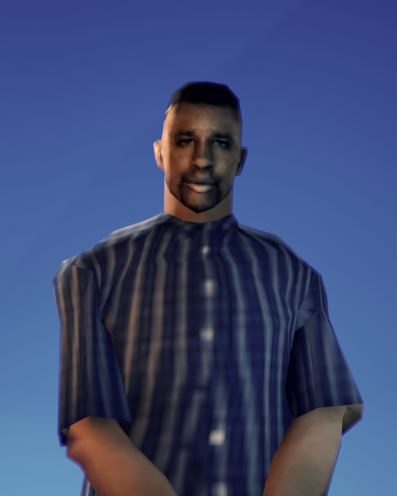

MIKUL
3D PORTFOLIO
KONTAKT
Discord: mycool2137
Zajmuję się tworzeniem i konwertowaniem modeli 3D oraz tekstur do GTA San Andreas i nie tylko. Od eleganckich ubrań po zupełnie nowe pedy, sprawdź portfolio, i nadaj swojej grze unikalny charakter.
Sprawdź dotychczasowe praceCennik